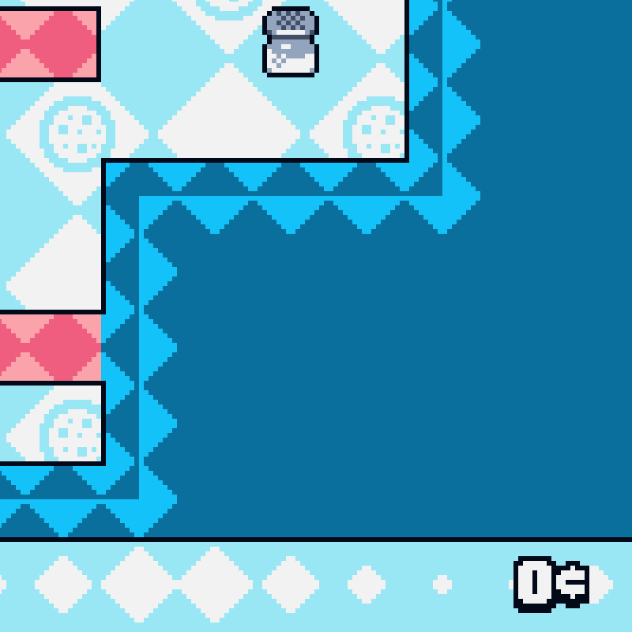
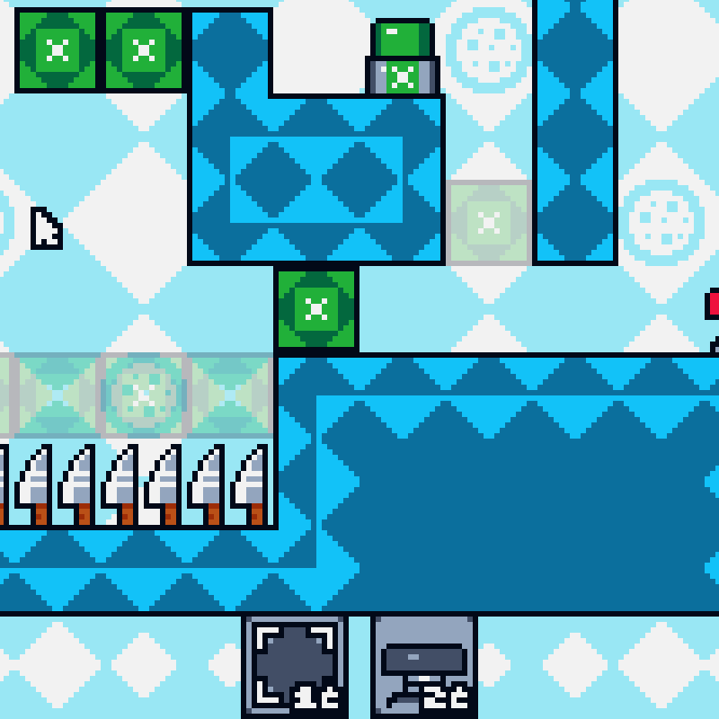
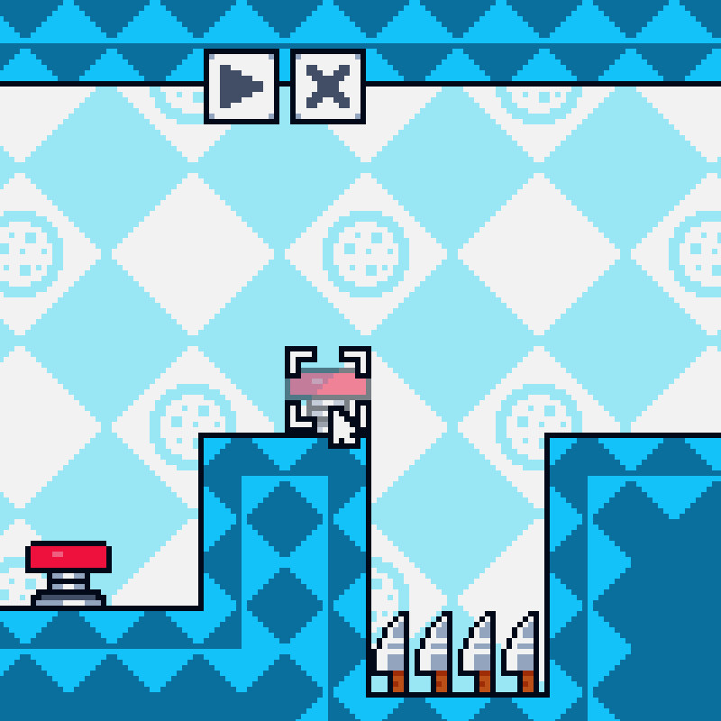
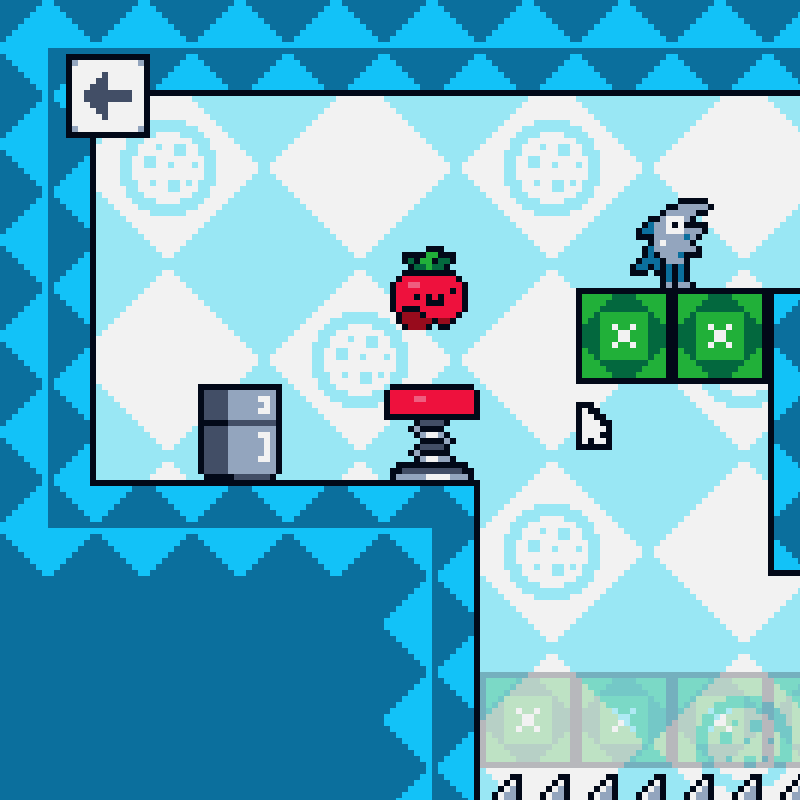
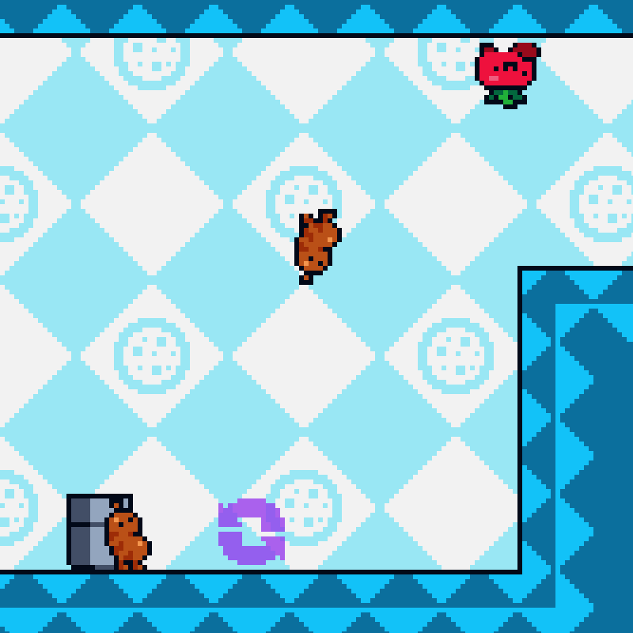
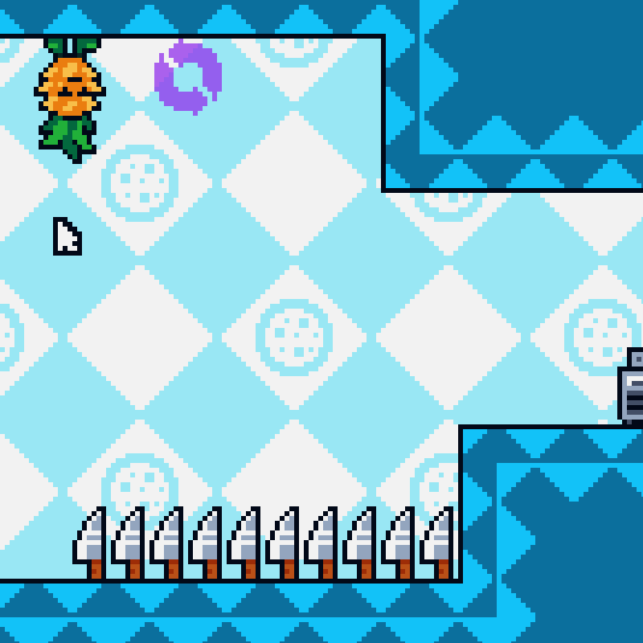

PIZZA PARTY
Cooking a pizza in this kitchen won't be easy. The motto of this pizzeria is literally "you can't make me"! These pizza toppings will wander wherever they want, so it's your job to get them from fridge to oven. Luckily, you'll have a variety of tools at your disposal, and a new puzzle to explore in every level!
Friends or Food?
This game features seven (adorable!) pizza topping characters. Tomato, Cheese, Sausage, Pepperoni, Mushroom, Pineapple, and Anchovy are all here! The toppings you get for your pizza are random every time you hit play on a level. You may get perfectly balanced pizza ingredients, or you might get nothing but anchovies.
Salt Shakers
Once you defeat all thirteen levels, you can also collect the six salt shakers as an additional challenge! While there is no reward for collecting all of them, you can still show off to your friends how great you are.
TIPS FROM THE DEVELOPERS
Where better to go for advice on a game than straight to the developers? We solicited gameplay hints from Jeremy Kotz, game designer at Don't Put Me On The Spot (the team behind Topping Tumble).
Coins


One of the most important things to master in this game is your currency. Every level you'll have only a limited amount of coins to spend on tiles in the shop. Some kinds of tiles cost more than others, so make sure to consider when it's worth spending a little extra.
Spring into Action


The first unique tile you'll add to your arsenal is the spring. It'll help you get to all sorts of high-up places you couldn't reach before. It can't be placed anywhere, so try using it in tandem with your regular tiles!
Do a Flip!


What goes up, might stay up? Flipping gravity leads to a whole new set of challenges in some levels. Remember to use every tile to its full advantage, as some might be useful even when you're walking on the ceiling.